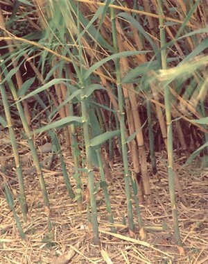

ⲟⲉⲓⲕ S nn m, reed: ShC 73 152 take heed not to root up ϩⲁϩ ⲛⲟ. ϩⲛⲛⲃⲟ, ib & not to break ⲛⲥⲏϥⲉ ⲛⲛⲟ., ShZ 501 ⲙⲙⲁ ⲛⲟ. where cattle pasture, Mor 51 40 will not go to reap ⲟ. with brethren, ib 39 v ⲛⲟⲟⲩϩⲉ, Z 340 from modesty he plunged ϩⲛⲛⲟ. ⲉⲧⲣⲏⲧ, BP 11349 in neglected field ⲛⲟ. ⲉⲧⲣⲱⲕϩ ϩⲁⲡⲓⲃⲉ, WS 147 ⲙⲟⲓⲁϩ ⲛⲟ.
(noun
male)
species
reed

complete
254b
See also:
| view | ⲥⲏⲃⲉ, ⲥⲏϥⲉ S ⲥⲏⲃⲓ, ⲥⲉⲃⲓ B ⲥⲏϥⲓ F ⲥⲃ- S | (noun female) reed [καλαμος]
greave [κνημις] shin-bone kohl bottle1374 |
| view | ⲕⲁϣ SB ⲕⲉϣ AF ⲕⲉϣ- B | (noun male/female) reed [καλαμος,
καλαμη]
― as stalk ― as pen ― as shin-bone ― as staff to lean on ― as plough-pole ― as stem (of candelabra) ― as paling as adj891 |
| view | ⲕⲁⲙ SB ϭⲉⲙ (?) Sa ⲕⲏⲙ Sf | (noun male) reed, rush [θροιον]805 |